One app for the person booking the groom and the person doing it
PetCo wanted a better way to manage grooming appointments. We designed a single app with two portals — one for pet owners, one for groomers — joined by a service blueprint, so what one side enters is exactly what the other side needs.
FIG. 00 — ONE APP, TWO PORTALS, ONE CONVERSATION
ROLE
Researcher, designer, tester
TEAM
With Faith Park and Margaret Payne
TIMELINE
3-week sprint
TOOLS
Figma, Procreate, G-Suite, Trello
CUSTOMER PORTAL
83% of testers finished every task in under 5 minutes
EMPLOYEE PORTAL
Every tester finished every task in under 3 minutes
DELIVERED
Two high-fidelity prototypes and a service blueprint
The brief
PetCo wanted to modernize appointment management for both customers and employees: a mobile app that helps clients manage time, place, location and appointments, while giving employees a better way to communicate with pet owners and reach the information they need to provide great care.
Business needs A mobile app that streamlines appointment management for both clients and PetCo staff.
User goals Trustworthy, easy-to-find service providers, and booking that doesn't require a phone call.
THE PROBLEM — TWO SIDES OF ONE APPOINTMENT
PetCo customers needed a faster, more confident way to find and book credible services for their pets, without digging through reviews elsewhere or calling to schedule.
PetCo employees needed better visibility into pet information and a direct line to owners, so they could deliver higher-quality, more personalized care.
Research
Competitive and comparative analysis, an audit of the current app, HEART metrics, user interviews and affinity mapping. We interviewed six people — pet owners and PetCo employees — and four themes came out.
Credibility and qualityUsers prioritize credibility and quality when booking appointments.
Online bookingUsers prefer to book appointments online — but are often required to call.
Poor CRMPoor CRM management leads to frustrated customers and frustrated employees.
ReviewsUsers rely on reviews when choosing services.
FOUR THEMES, SIX INTERVIEWS
The current app
With the needs defined, we audited the existing app to see where it fell short. Three gaps stood out.
An inconsistent homepage
Two users with identical profiles saw completely different homepages — one with a pet profile section, one without. The inconsistency eroded trust and left significant screen space unused.
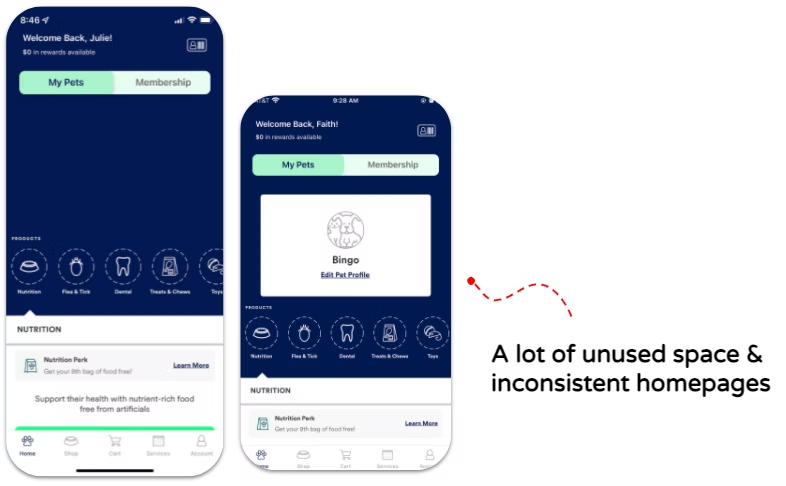
Two identical profiles, two different homepages — and a lot of unused space
No way to change a booking
After booking, users couldn't reschedule or cancel in the app. Every change required a phone call — a friction point that contradicts the whole purpose of mobile booking.
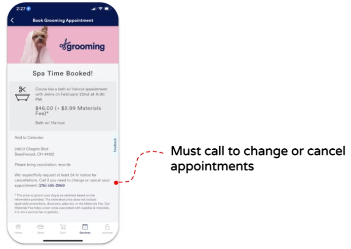
Booked — but changing or cancelling meant calling the store
No way to judge a stylist
The grooming flow gave users no way to see a stylist's reviews or profile before booking — even though research showed reviews are the primary factor in choosing a service provider.
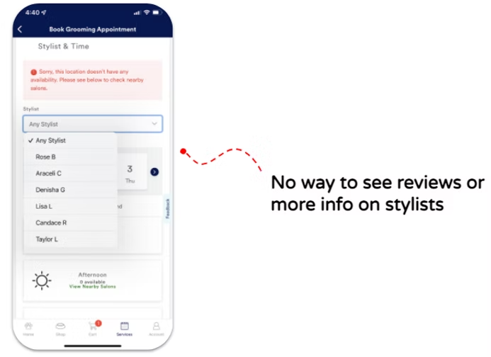
Choosing a stylist from a bare dropdown, with nothing to go on
The users
I built two proto-personas, one for each side of the appointment. The illustrations are mine.
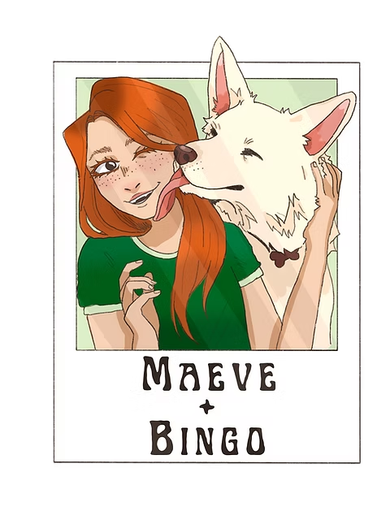
CUSTOMER PERSONAMaeve and Bingo
CUSTOMER
Maeve is new to Pittsburgh and needs a groomer she can trust with an anxious dog. She doesn't have time to research extensively — she needs credible options fast, and confidence that Bingo is in good hands.
AGE
32
LOCATION
Pittsburgh
WORK
Teacher
PET
Bingo, an anxious husky
FRUSTRATIONS
Can't find recent reviews
Navigating confusing technology
Feeling anxious about Bingo's safety
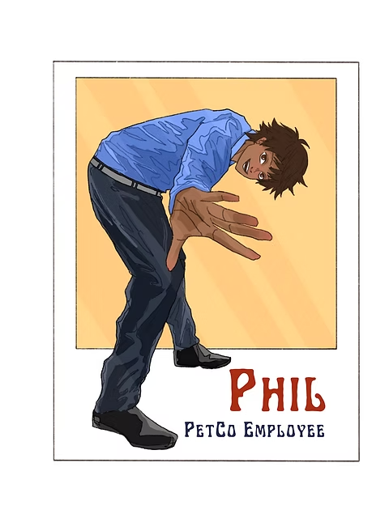
EMPLOYEE PERSONAPhil
EMPLOYEE
Phil is a skilled groomer who loves working with animals but finds the tech side of his job frustrating. Clunky CRM tools and poor owner communication get in the way of the work he actually cares about.
AGE
25
LOCATION
Pittsburgh
WORK
Groomer at PetCo
FRUSTRATIONS
Finds CRM systems confusing
Hates wasting his time
Pet owners who don't disclose important information about their pets
Maeve's biggest worry and Phil's biggest frustration are the same gap, seen from opposite sides. She worries nobody knows Bingo is anxious; he's frustrated nobody told him. The service blueprint was built around closing it.
Service blueprint
The blueprint maps Maeve booking a grooming appointment all the way through to picking Bingo up — what she does, what PetCo does in front of her, what happens behind the scenes, and the systems underneath. It had to serve user needs and business needs at the same time.
Customer actions
Book grooming appointment on the app1
Bring Bingo to PetCo
Check into appointment
Walk into PetCo
Drop Bingo off
Wait for Bingo
Receive notification that Bingo is ready3
Pick up Bingo
LINE OF INTERACTION
Frontstage actions
Receive email or text confirmation
Receive email or text reminder
Send “We’re ready for you!” message2
Receive Bingo
Send picture and message about Bingo during the appointment3
Send notification that Bingo is ready
Return Bingo
LINE OF VISIBILITY
Backstage actions
View appointment details in CRM1
Prepare for appointment1
Receive customer check-in
Groom Bingo
Finish grooming Bingo
Enter notes for Bingo in his pet profile
LINE OF INTERNAL INTERACTION
Support processes
Appointment database
Order supplies
SCROLL SIDEWAYS TO SEE THE WHOLE VISIT →
1Increase brand trustMaeve enters Bingo's details when she books, and Phil reads them before the appointment. She's confident his needs are known — transparency that builds trust on both sides.
2Align with COVID-19 policiesPhil messages Maeve when he's ready, so she isn't waiting in the store. Less foot traffic, and a contactless handover.
3Increase customer satisfactionDirect in-app messaging keeps owners informed throughout, down to a photo of Bingo mid-groom — better for customers, employees and the business.
Sketching
With the service design in place, we sketched the core screens. One early decision became the structural foundation for everything after: both portals live inside the same app, and your login routes you to the right one.
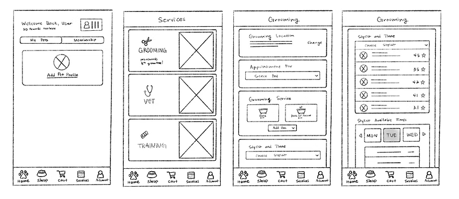
Early sketches of the customer home, services and booking screens
From there we went back to the problem statements and sketched flows for both sides: helping customers find credible services, and giving employees easier access to pet information and owner communication.
Customer portal
Rescheduling an appointment
Upcoming appointments sit right on the home screen, with one-tap reschedule and cancel — directly closing one of the three gaps from the audit. Here Maeve moves Bingo from 9:00 to 11:45 without a phone call.
Stylist profiles
I led the design of stylist profiles: ratings, reviews and a portfolio of previous work, right inside the booking flow. They give customers the credibility signals research showed they rely on most.
Choosing a date and time
A flexible selector that defaults to a weekly view — the format most users preferred — with a monthly calendar still available. This screen went through several rounds of iteration from testing.
Employee portal
Viewing pet information
Phil’s home screen shows the day’s schedule with quick access to each pet’s profile — breed, size, allergies and behavioral notes entered by the owner at booking. He has the context he needs before the appointment starts.
Messaging pet owners
Employees can message owners straight from the home screen or the messages tab, keeping communication in one place instead of scattered outside the app.
Testing
We tested mid-fidelity grayscale prototypes of both portals. Stripping out colour and imagery kept feedback on usability, not styling. Six testers took part across both experiences.
Customer tasks
Book a grooming appointment with a groomer you'd feel safe leaving your pet with
Change the appointment from 9:00 am to 11:45 am
Speak to a vet quickly, on video
Employee tasks
Prepare for a grooming appointment with Bingo by learning more about him
Message Maeve to bring Bingo in for his appointment
Clock in to work
View appointments for March 17th
Customer portal
SHARE OF TESTERS · n=6
Finished every task in under 5 minutes
83%
Made one error or fewer
66%
Employee portal
SHARE OF TESTERS · n=6
Finished every task in under 3 minutes
100%
Made one error or fewer
83%
Customer testers struggled with the date and time selector, and found stylist selection small and hard to tap. Employee testers were thrown by a home button centered in the navigation bar rather than on the left.
Iterations
Stylist selection — customer portal
Testers found the dropdown list of stylists hard to navigate, so we replaced it with scrollable cards that are easier to browse and tap.
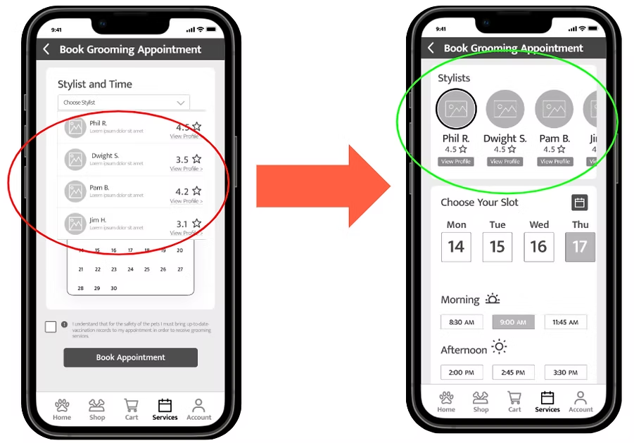
From a dropdown of names to scrollable stylist cards
Date and time — customer portal
The calendar was hard to read at phone size, so the flow now leads with the weekly time-slot view, with the monthly calendar still in the top corner for people who prefer it.
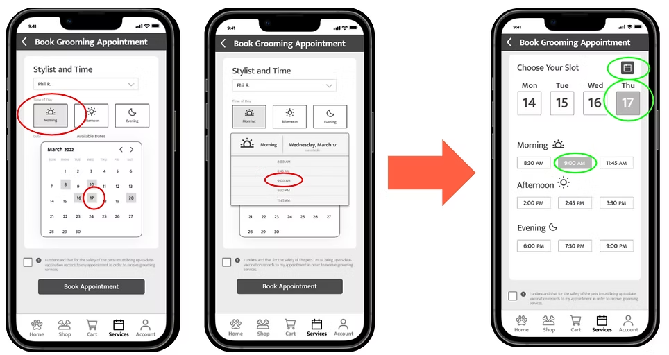
Weekly slots first, monthly calendar one tap away
Home button — employee portal
We moved the home button to the left of the navigation bar, matching standard mobile conventions.
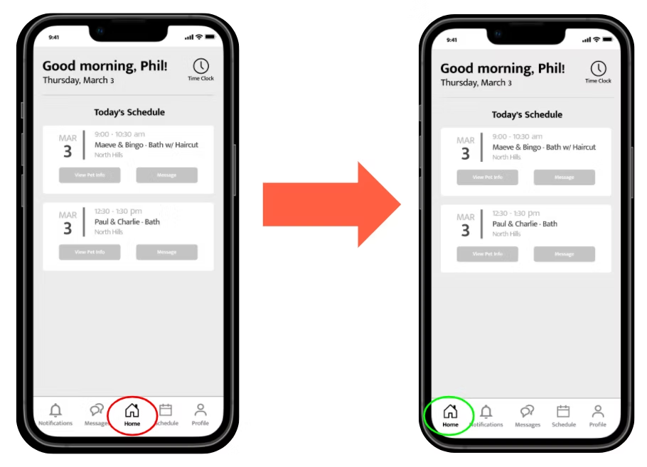
The home button moved from the center to the left
A second round, in full colour
After building the high-fidelity prototype we tested again with three users. Most first-round changes held up, and two more refinements came out of it.
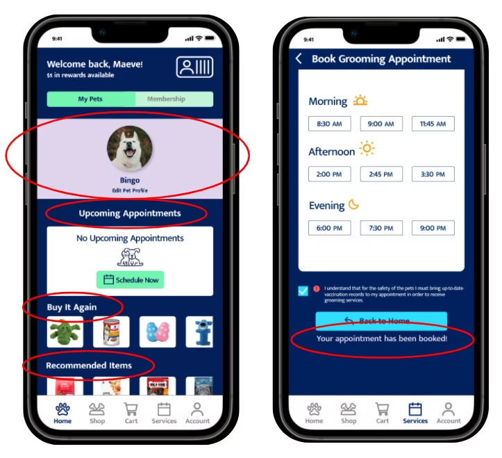
Customer — larger type on the home screen, and an explicit booking confirmation instead of a silent redirect
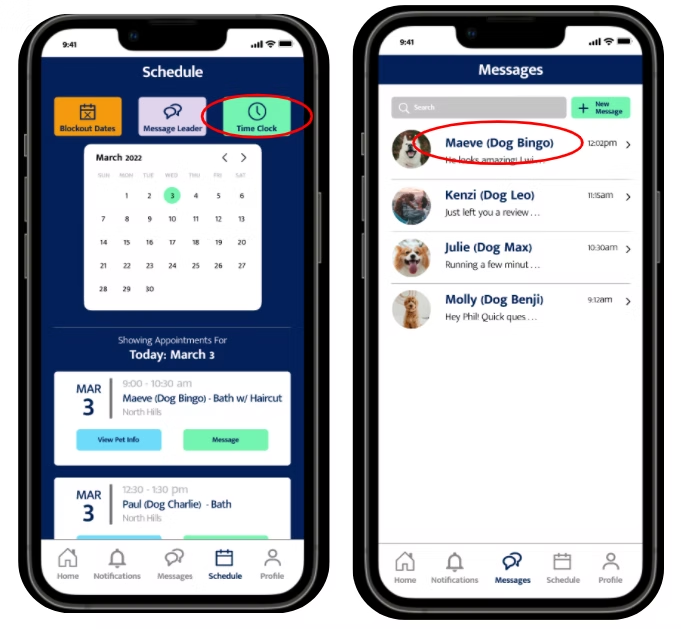
Employee — a more visible time clock, and last names beside owners, since some pets have human names
Next steps, and what I'd take from it
Curbside pickupFind out why customers aren't using curbside, and bring what we learn into the app
Faster reschedulingSurface previously selected times so rescheduling takes fewer taps
Compare against the originalMeasure the redesign against the original app with real data
Tablet and iPadAdapt for larger screens — the original app renders at phone size on an iPad
This project reinforced how much the employee experience shapes the customer experience, and how designing for both within the same product means keeping each user's context clearly in view.
The blueprint is where that stopped being abstract. Every feature Maeve sees has a counterpart Phil depends on: the notes she types when she books are the pet profile he reads before the groom, and the "ready for you" message he sends is her cue to walk in. Designed separately, either portal could have looked finished and still left the gap between them.
The numbers are directional, not conclusive — six testers in the first round and three in the second. What they did settle was where the friction lived, and every change we made traces back to a specific moment someone struggled.
NEXT PROJECT
Rebuilding how compliance officers find the one person who needs attention